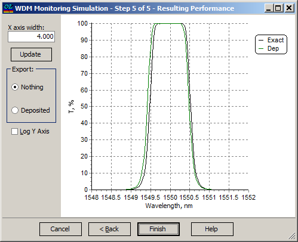

WDM Monitoring Simulation - Resulting Performance
WDM Monitoring Simulation - Resulting Performance
Navigation: OptiLayer Menu Commands > Analysis Menu > WDM Monitoring Simulation >
WDM Monitoring Simulation - Resulting Performance
` <wdm_error_analysis___simulatio.html>`__ ` <wdmerroranalysis.html>`__ ` <filter_production_yield.html>`__

At the last step of the WDM Monitoring Simulation dialog, it is possible to compare the performance of the simulated and theoretical filters. It is also possible to export the simulated filter from this dialog to OptiLayer in order to apply other OptiLayer options. Use the Export radio buttons for this purpose.
The X-axis width entry field allows the user to change the width of the spectral scale of the plot. Press the Update button after changing this value.
See also: